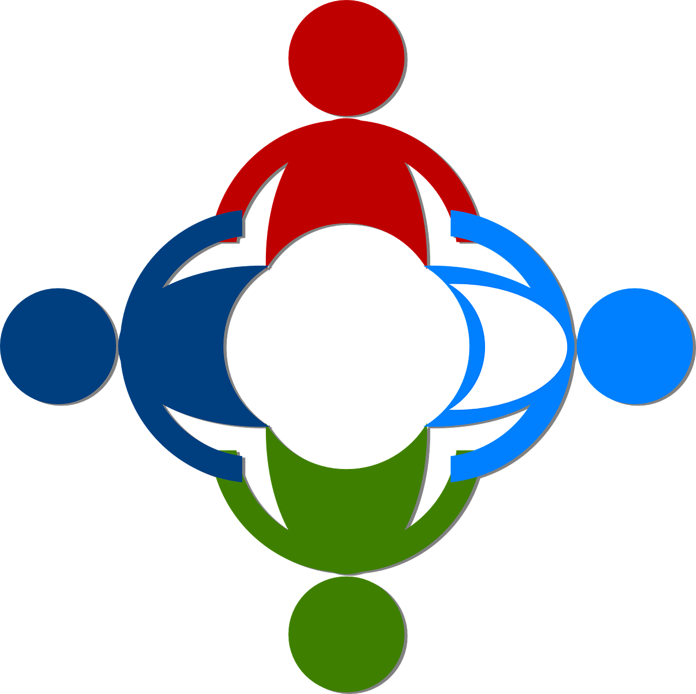

Equipes - 
As equipes da plataforma Code-X são formadas por profissionais comprometidos com a missão de oferecer uma experiência de aprendizado transformadora e de alta qualidade. Cada membro desempenha um papel essencial para garantir que a plataforma atenda às expectativas dos usuários e mantenha um padrão de excelência. Entre as principais equipes, destacamos:
1. Equipe de Desenvolvimento Responsável por criar, aprimorar e manter o sistema da plataforma. Esses profissionais trabalham na implementação de novas funcionalidades, na correção de erros e na otimização do desempenho, garantindo uma experiência de navegação fluida e segura.
Compromisso: Garantir que a tecnologia utilizada esteja sempre atualizada, oferecendo inovação e estabilidade. 2. Equipe de Conteúdo Educacional Formada por especialistas em programação e pedagogia, essa equipe é encarregada de elaborar cursos, quizzes e materiais interativos. Seu foco está na criação de conteúdos claros, didáticos e alinhados com as demandas do mercado de tecnologia. Compromisso: Entregar materiais acessíveis, atualizados e educacionais para o aprendizado prático. 3. Equipe de Suporte ao Usuário O atendimento ao cliente é realizado por uma equipe dedicada a resolver dúvidas, problemas técnicos e oferecer orientações rápidas e eficientes. Compromisso : Garantir que os usuários se sintam coletados e tenham suas questões resolvidas de forma ágil. 4. Equipe de Design e Experiência do Usuário (UX/UI) Trabalha para criar um layout intuitivo, responsivo e agradável, facilitando o acesso aos conteúdos e funcionalidades da plataforma. Compromisso: Oferecer uma interface visualmente atraente e de fácil navegação, acessível em diferentes dispositivos. 5. Equipe de Marketing e Comunicação Responsável por divulgar a plataforma, interagir com a comunidade e criar campanhas educativas que ampliem o alcance do Code-X. Compromisso: Promover a plataforma de forma ética e atrair novos usuários, destacando os diferenciais e valores do Code-X. 6. Equipe de Segurança e Compliance Focada na proteção de dados e na conformidade com regulamentações como a LGPD , garantindo a privacidade e a segurança dos usuários. Compromisso: Implementar medidas preventivas e corretivas para proteger a plataforma contra ameaças e manter os dados seguros. 7. Equipe de Gestão e Planejamento Encarregada de coordenar todas as operações do Code-X, garantindo que os objetivos estratégicos sejam realizados e que os recursos sejam bem gerenciados. Compromisso: Alinhar as equipes para manter a visão e os valores da plataforma em todas as etapas do trabalho. Essas equipes comprometidas trabalham em sinergia para que o Code-X seja uma plataforma confiável, eficiente e transformadora para seus usuários.